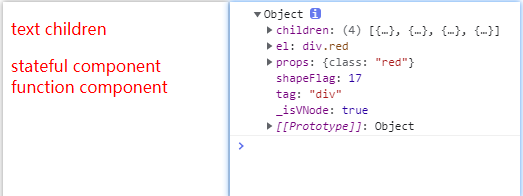
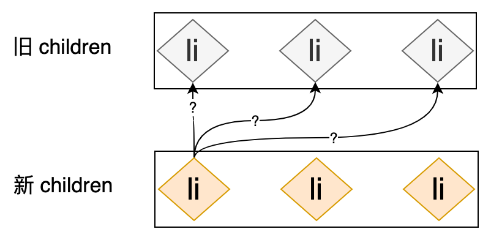
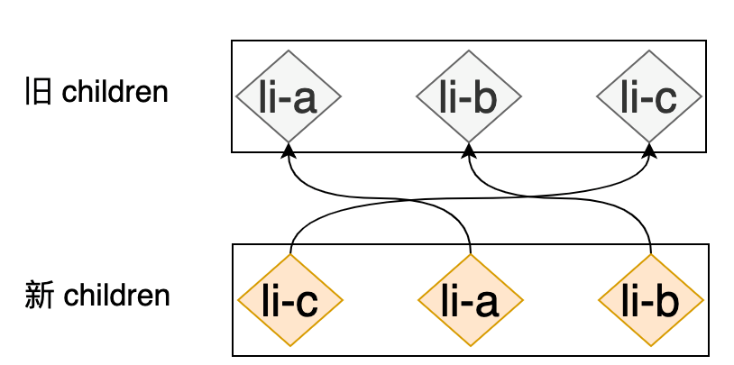

深度好文 http://hcysun.me/vue-design/zh/essence-of-comp.html
编译器和渲染器 API 初探
Complier和 Renderer
我们有这样一段 HTML
1 2 3 <div id ="div" > <button @click ="click" > click</button > </div >
编译器会先把他处理成 render 函数，类似下面的的代码
1 2 3 4 5 6 7 8 9 10 11 import { h } from 'vue' render ( return h('div' , { id: 'div' , }, [ h('button' , { onClick: this .click }, 'click' ) ]) }
渲染器通过 render 函数获取对应的 VNode，类似这样：
1 2 3 4 5 6 7 8 9 const vDom = { tag: 'div' , id: 'div' , children: [{ tag: 'button' , onClick: this .click, text: 'click' }] }
编译器（Compiler）真实场景
上面是一个很简单的例子，实际上，Vue 3中的编译器做了很多的优化 工作，比如判断你的节点是静态的还是动态的、缓存事件的绑定等等。所以如果你的组件用 template 实现的话，反而会被 Vue 优化。
我们通过 Vue 3在线模板编译系统 生成一段真实代码：
1 2 3 4 5 6 7 8 9 import { createVNode as _createVNode, openBlock as _openBlock, createBlock as _createBlock } from "vue" export function render (_ctx, _cache ) return (_openBlock(), _createBlock("div" , { id : "div" }, [ _createVNode("button" , { onClick : _ctx.click }, "click" , 8 , ["onClick" ]) ])) }
可以看到和我们手写的 render 函数还是有比较大的差异。
设计 VNode
可参考 Vue3 VNode源码
render 函数返回结果就是 h 函数执行的结果，因此 h 函数的输出为 VNode。
所以需要先设计一下我们的 VNode。
用 VNode 描述 HTML
一个 html 标签有它的标签名、属性、事件、样式、子节点等诸多信息，这些内容都需要在 VNode 中体现。
1 2 3 4 <div id ="div" > div text <p > p text</p > </div >
1 2 3 4 5 6 7 8 9 10 11 12 const elementVNode = { tag: 'div' , props: { id: 'div' }, text: 'div text' , children: [{ tag: 'p' , props: null , text: 'p text' }] }
上面的代码显示了 DOM 变成 VNode 的表现形式，VNode 各属性解释：
tag ：表示 DOM 元素的标签名，如 div、span 等props：表示 DOM 元素上的属性，如id、class 等children：表示 DOM 元素的子节点text：表示 DOM 元素的文本节点
这样设计 VNode 完全没有问题（实际上 Vue 2 就是这样设计的），但是 Vue 3 设计的 VNode 并不包含 text 属性，而是直接用 children 代替，因为 text 本质也是 DOM 的子节点。
在保证语义讲得通的情况下尽可能复用属性，可以使 VNode 对象更加轻量 。
基于此我们把刚才的 VNode 修改成如下形式：
1 2 3 4 5 6 7 8 9 10 11 12 13 14 15 const elementVNode = { tag: 'div' , props: { id: 'div' }, children: [{ tag: null , props: null , children: 'div text' }, { tag: 'p' , props: null , children: 'p text' }] }
用 VNode 描述抽象内容
什么是抽象内容呢？组件就属于抽象内容，比如下面这一段模板内容：
1 2 3 <div > <MyComponent > </MyComponent > </div >
MyComponent 是一个组件，我们预期渲染出 MyComponent 组件所有的内容，而不是一个 MyComponent 标签，这用 VNode 如何表示呢？
上一段内容我们其实已经通过 tag 是否为 null 来区分元素节点和文本节点了，那这里我们可以通过 tag 是否是字符串判断是标签还是组件呢？
1 2 3 4 5 6 7 8 const elementVNode = { tag: 'div' , props: null , children: [{ tag: MyComponent, props: null }] }
理论上是可以的，Vue 2 中就是通过 tag 来判断的，具体过程如下，可以在这里看源码 ：
VNode.tag 如果不是字符串，则创建组件类型的 VNodeVNode.tag是字符串
若是内置的 html 或 svg 标签，则创建正常的 VNode
若是属于某个组件的 id，则创建组件类型的 VNode
未知或没有命名空间的组件，直接创建 VNode
以上这些判断都是在挂载(或 patch)阶段进行的，换句话说，一个 VNode 表示的内容需要在代码运行阶段才知道。这就带来了两个难题：无法从 AOT 的层面优化、开发者无法手动优化。
如果可以提前知道 VNode 类型，那么就可以对其进行优化，所以这里我们可以定义好一套用来判断 VNode 类型的规则，随便是用 FLAG = 1 这样的数字表示还是其它方法。
区分 VNode类型
这里我们给 VNode 增加一个字段 shapeFlag（这是为了和 Vue 3 保持一致），它是一个枚举类型变量，具体如下：
1 2 3 4 5 6 7 8 9 10 11 12 13 14 15 16 17 18 19 20 21 22 23 24 export const enum ShapeFlags { ELEMENT = 1 , FUNCTIONAL_COMPONENT = 1 << 1 , STATEFUL_COMPONENT = 1 << 2 , TEXT_CHILDREN = 1 << 3 , ARRAY_CHILDREN = 1 << 4 , SLOTS_CHILDREN = 1 << 5 , PORTAL = 1 << 6 , SUSPENSE = 1 << 7 , COMPONENT_SHOULD_KEEP_ALIVE = 1 << 8 , COMPONENT_KEPT_ALIVE = 1 << 9 , COMPONENT = ShapeFlags.STATEFUL_COMPONENT | ShapeFlags.FUNCTIONAL_COMPONENT }
现在我们可以修改我们的 VNode 如下：
1 2 3 4 5 6 7 8 9 10 const elementVNode = { shapeFlag: ShapeFlags.ELEMENT, tag: 'div' , props: null , children: [{ shapeFlag: ShapeFlags.COMPONENT, tag: MyComponent, props: null }] }
shapeFlag 如何用来判断 VNode 类型呢？按位运算即可。
1 const isComponent = vnode.shapeFlag & ShapeFlags.COMPONENT
熟悉一下按位运算。
a & b：对于每一个比特位，只有两个操作数相应的比特位都是1时，结果才为1，否则为0。a | b：对于每一个比特位，当两个操作数相应的比特位至少有一个1时，结果为1，否则为0。
我们把 ShapeFlags 对应的值列出来，如下：
ShapeFlags
操作
bitmap
ELEMENT
0000000001
FUNCTIONAL_COMPONENT
1 << 1
0000000010
STATEFUL_COMPONENT
1 << 2
0000000100
TEXT_CHILDREN
1 << 3
0000001000
ARRAY_CHILDREN
1 << 4
0000010000
SLOTS_CHILDREN
1 << 5
0000100000
PORTAL
1 << 6
0001000000
SUSPENSE
1 << 7
0010000000
COMPONENT_SHOULD_KEEP_ALIVE
1 << 8
0100000000
COMPONENT_KEPT_ALIVE
1 << 9
1000000000
1 COMPONENT = ShapeFlags.STATEFUL_COMPONENT | ShapeFlags.FUNCTIONAL_COMPONENT
根据上表展示的基本 flags 值可以很容易地得出下表：
ShapeFlags
bitmap
COMPONENT
00000001 10
区分 children 的类型
上面我们已经看到了 children 可以是数组或纯文本，但真实场景可能是：
这里我们可以增加一个 ChildrenShapeFlags 的变量表示 children 的类型，但是基于之前的设计原则，我们完全可以用 ShapeFlags 来表示，那么同一个 ShapeFlags 如何既用来表示 VNode 的类型，又用来表示其 children 的类型呢？
仍然是按位运算，我们通过 JavaScript 代码判断 children 类型，然后和当前 VNode 进行按位或运算即可。
我们增加如下函数用来专门处理子节点类型，这和 Vue 3 中的处理一致：
1 2 3 4 5 6 7 8 9 10 11 12 function normalizeChildren (vnode, children ) let type = 0 if (children == null ) { children = null } else if (Array .isArray(children)) { type = ShapeFlags.ARRAY_CHILDREN } else if (typeof children === 'string' ) { children = String (children) type = ShapeFlags.TEXT_CHILDREN } vnode.shapeFlag |= type }
这样我们就可以直接通过 shapeFlag 同时判断 VNode 及其 children 类型了。
为什么 children 也需要标识呢？原因只有一个：为了 patch 过程的优化 。
定义 VNode
至此，我们可以定义 VNode 结构如下：
1 2 3 4 5 6 7 8 9 10 11 12 13 export interface VNodeProps { [key: string ]: any } export interface VNode { _isVNode: true el: Element | null shapeFlag: ShapeFlags.ELEMENT, tag: | string | Component | null , props: VNodeProps | null , children: string | Array <VNode> }
实际上，Vue 3 中对 VNode 的定义要复杂的多，这里就不去细看了。
题外话
为什么vue2的template下只允许有一个根元素，vue3却允许有多个？
如果模板中只有一个 td 标签，即只有一个根元素，这很容易表示：
1 2 3 4 const elementVNode = { tag: 'td' , data: null }
但是模板中不仅仅只有一个 td 标签，而是有多个 td 标签，即多个根元素，这如何表示？此时我们就需要引入一个抽象元素，也就是我们要介绍的 Fragment。
1 2 3 4 5 6 7 8 9 10 11 12 13 14 15 16 17 18 19 20 const Fragment = Symbol ()const fragmentVNode = { tag: Fragment, data: null , children: [ { tag: 'td' , data: null }, { tag: 'td' , data: null }, { tag: 'td' , data: null } ] }
如上，我们把所有 td 标签都作为 fragmentVNode 的子节点，根元素并不是一个实实在在的真实 DOM，而是一个抽象的标识，即 Fragment。
当渲染器在渲染 VNode 时，如果发现该 VNode 的类型是 Fragment，就只需要把该 VNode 的子节点渲染到页面。
生成 VNode 的 h 函数
基本的 h 函数
首先我们实现一个最简单的h函数，可以使这样的，接收三个参数：
tag 标签名props DOM 上的属性children 子节点
我们新建一个文件h.ts，内容如下：
1 2 3 4 5 6 7 function h (tag, props, children ) return { tag, props, children } }
我们用如下的 VNode 来表示 hello：
1 2 3 4 5 6 import { h } from './h' const vdom = h('div' , { class: 'red' }, [ h('span' , null , 'hello' ) ])
看一下实际输出内容：
1 2 3 4 5 6 7 8 9 10 11 12 13 const vdom = { "tag" : "div" , "props" : { "class" : "red" }, "children" : [ { "tag" : "span" , "props" : null , "children" : "hello" } ] }
基本符合预期，但是这里有同学可能又要问了：“这个 vdom 和写的 h 函数没什么不同，为什么不直接写 VNode？”
这是因为我们现在的 h 函数所做的仅仅就是返回传入的参数，实际上根据我们对 VNode 的定义，还缺少一些字段，不过你也可以直接写 VNode，但这样会增加大量的额外工作。
完整的 h 函数
现在我们补全 h 函数，添加 _isVNode、el 和 shapeFlag 字段。
1 2 3 4 5 6 7 8 9 10 function h (tag, props = null , children = null ) return { _isVNode: true , el: null , shapeFlag: null , tag, props, children } }
这里的 _isVNode 永远为 true，el 不是在创建 VNode 的时候赋值，所以不用处理，我们主要处理 shapeFlag，实际上 shapeFlag 有 10 种类型，我们这里只实现一个最简单的判断：
1 2 3 4 5 6 7 8 9 10 11 12 13 14 15 16 17 18 19 20 function h (tag, props = null , children = null ) let shapeFlag = null if (typeof tag === 'string' ) { shapeFlag = ShapeFlags.ELEMENT } else if (typeof tag === 'object' ){ shapeFlag = ShapeFlags.STATEFUL_COMPONENT } else if (typeof tag === 'function' ){ shapeFlag = ShapeFlags.FUNCTIONAL_COMPONENT } return { _isVNode: true , el: null , shapeFlag, tag, props, children } }
现在我们需要处理一下 children 的类型了，VNode 章节中我们讲过其判断逻辑，那么 h 函数现在完整逻辑如下：
1 2 3 4 5 6 7 8 9 10 11 12 13 14 15 16 17 18 19 20 21 22 23 24 25 26 27 28 29 30 31 32 33 34 35 36 37 function h (tag, props = null , children = null ) let shapeFlag = null if (typeof tag === 'string' ) { shapeFlag = ShapeFlags.ELEMENT } else if (typeof tag === 'object' ){ shapeFlag = ShapeFlags.STATEFUL_COMPONENT } else if (typeof tag === 'function' ){ shapeFlag = ShapeFlags.FUNCTIONAL_COMPONENT } const vnode = { _isVNode: true , el: null , shapeFlag, tag, props, children } normalizeChildren(vnode, vnode.children) return vnode } function normalizeChildren (vnode, children ) let type = 0 if (children == null ) { children = null } else if (Array .isArray(children)) { type = ShapeFlags.ARRAY_CHILDREN } else if (typeof children === 'object' ) { type = ShapeFlags.SLOTS_CHILDREN } else if (typeof children === 'string' ) { children = String (children) type = ShapeFlags.TEXT_CHILDREN } vnode.shapeFlag |= type }
现在我们重新写一个测试代码看一下 h 函数输入结果：
1 2 3 4 5 6 7 8 9 10 11 12 13 14 15 16 17 18 19 20 21 22 23 24 25 26 27 28 29 30 31 32 33 34 35 36 37 38 39 40 41 42 43 44 45 46 47 import { h } from './h' const MyComponent = { render ( } const vdom = h('div' , { class: 'red' }, [ h('p' , null , 'hello' ), h('p' , null , null ), h(MyComponent) ]) console .log(vdom);
渲染 VNode 的 mount 函数
得到 VNode 之后，我们需要把它渲染到页面上，这就是渲染器的 Mount 阶段。
mount 函数基本原理
1 2 3 4 function mount (vnode, container ) const el = document .createElement(vnode.tag) container.appendChild(el); }
这就是挂载所做的核心事情，不过这里我们还缺少具体要实现的内容：
根据不同 shapeFlag 生成不同 DOM
设置 DOM 的属性
DOM 子节点的处理
生成 DOM 后需将其赋值给 vnode.el
解决 VNode 的类型问题
这里我们需要先了解一下普通有状态组件和函数式组件分别是什么，以下仅做理解用。
1 2 3 4 5 const MyComponent = { render ( return h('div' , null , 'stateful component' ) } }
1 2 3 function MyFunctionalComponent ( return h('div' , null , 'function component' ) }
我们根据vnode.shapeFlag的值来对各种类型VNode进行渲染操作
1 2 3 4 5 6 7 8 9 10 11 12 13 14 15 16 17 18 19 20 21 22 23 24 25 26 27 function mount (vnode, container ) if (vnode.tag === null ) { mountTextElement(vnode, container) } else if (vnode.shapeFlag & ShapeFlags.ELEMENT) { mountElement(vnode, container) } else if (vnode.shapeFlag & ShapeFlags.STATEFUL_COMPONENT) { mountStatefulComponent(vnode, container) } else if (vnode.shapeFlag & ShapeFlags.FUNCTIONAL_COMPONENT) { mountFunctionalComponent(vnode, container) } } function mountTextElement (vnode, container ) ... } function mountElement (vnode, container ) ... } function mountStatefulComponent (vnode, container ) ... } function mountFunctionalComponent (vnode, container ) ... }
渲染文本节点
1 2 3 4 function mountTextElement (vnode, container ) const el = document .createTextNode(vnode.children) container.appendChild(el) }
渲染标签节点
1 2 3 4 function mountElement (vnode, container ) const el = document .createElement(vnode.tag) container.appendChild(el) }
渲染普通有状态组件
普通有状态组件就是一个对象，通过render返回其VNode,因此其渲染方法如下
1 2 3 4 5 6 function mountStatefulComponent (vnode, container ) const instance = vnode.tag instance.$vnode = instance.render() mount(instance.$vnode, container) instance.$el = vnode.el = instance.$vnode.el }
渲染函数式组件
1 2 3 4 5 function mountFunctionalComponent (vnode, container ) const $vnode = vnode.tag() mount($vnode, container) vnode.el = $vnode.el }
设置 DOM 属性
这里为了简化，我们假设props的每一项都是DOM的attribute，所以我们可以这样做
1 2 3 4 5 6 7 8 9 10 function mountElement (vnode, container ) const el = document .createElement(vnode.tag) if (vnode.props){ for (const key in vnode.props){ const value = vnode.props[key] el.setAttribute(key, value) } } container.appendChild(el); }
实际上，Vue 3 中 props 是一个扁平化的结构，它同时包含了 property、attribute、event listener等，每一项都需要单独处理，如下：
1 2 3 4 5 6 props: { id: 'div' , class: 'red', key: 'key1' , onClick: this .onClick }
简单解释 property、attribute 的区别就是：attribute 是 DOM 自带的属性，如：id、class；property 是自定义的属性名，如：key、data-xxx。
这里我们简单处理一下事件绑定：
1 2 3 4 5 6 7 8 9 10 11 12 13 14 15 const isOn = (key ) => key[0 ] === 'o' && key[1 ] === 'n' function mountElement (vnode, container ) const el = document .createElement(vnode.tag) if (vnode.props) { for (const key in vnode.props) { const value = vnode.props[key] if (isOn(key)) { el.addEventListener(key.slice(2 ).toLowerCase(), value) } else { el.setAttribute(key, value) } } } container.appendChild(el); }
渲染子节点
我们知道 children 可以是字符串或数组，因此实现方法如下：
1 2 3 4 5 6 7 8 9 10 11 12 13 14 15 16 17 18 19 20 21 22 23 24 function mountElement (vnode, container ) const el = document .createElement(vnode.tag) if (vnode.props){ for (const key in vnode.props){ const value = vnode.props[key] el.setAttribute(key, value) } } if (vnode.children){ if (typeof vnode.children === 'string' ){ el.textContent = vnode.children }else { vnode.children.forEach(child => mount(child, el) }) } } container.appendChild(el); }
关联 VNode 及其 DOM
这个只需要增加一行代码即可，其它函数类似：
1 2 3 4 5 function mountTextElement (vnode, container ) const el = document .createTextNode(vnode.children) vnode.el = el container.appendChild(el) }
完整实现
1 2 3 4 5 6 7 8 9 10 11 12 13 14 15 16 17 18 19 20 21 22 23 24 25 26 27 28 29 30 31 32 33 34 35 36 37 38 39 40 41 42 43 44 45 46 47 48 49 50 51 52 53 54 55 56 57 function mount (vnode, container ) if (vnode.tag === null ) { mountTextElement(vnode, container) } else if (vnode.shapeFlag && ShapeFlags.ELEMENT) { mountElement(vnode, container) } else if (vnode.shapeFlag && ShapeFlags.STATEFUL_COMPONENT) { mountStatefulComponent(vnode, container) } else if (vnode.shapeFlag && ShapeFlags.FUNCTIONAL_COMPONENT) { mountFunctionalComponent(vnode, container) } } function mountTextElement (vnode, container ) const el = document .createTextNode(vnode.children) vnode.el = el container.appendChild(el) } function mountElement (vnode, container ) const el = document .createElement(vnode.tag) if (vnode.props){ for (const key in vnode.props){ const value = vnode.props[key] el.setAttribute(key, value) } } if (vnode.children){ if (typeof vnode.children === 'string' ){ el.textContent = vnode.children }else { vnode.children.forEach(child => mount(child, el) }) } } vnode.el = el container.appendChild(el) } function mountStatefulComponent (vnode, container ) const instance = vnode.tag instance.$vnode = instance.render() mount(instance.$vnode, container) instance.$el = vnode.el = instance.$vnode.el } function mountFunctionalComponent (vnode, container ) const $vnode = vnode.tag() mount($vnode, container) vnode.el = $vnode.el }
完整示例
1 2 3 4 5 6 7 8 9 10 11 12 13 14 15 16 17 18 19 20 21 22 23 24 25 26 27 28 29 30 31 32 33 34 35 36 37 38 39 40 41 42 43 44 45 46 47 48 49 50 51 52 53 54 55 56 57 58 59 60 61 62 63 64 65 66 67 68 69 70 71 72 73 74 75 76 77 78 79 80 81 82 83 84 85 86 87 88 89 90 91 92 93 94 95 96 97 98 99 100 101 102 103 104 105 106 107 108 109 110 111 112 113 114 115 116 117 118 119 120 121 122 123 124 125 126 127 128 129 130 131 132 133 134 135 136 137 138 139 140 141 142 143 144 145 146 147 148 149 150 151 152 153 154 155 156 157 158 159 160 161 162 163 164 165 166 167 <!DOCTYPE html > <html lang ="en" > <head > <meta charset ="UTF-8" > <meta name ="viewport" content ="width=device-width, initial-scale=1.0" > <title > Renderer Demo</title > <style > .red { color : red } </style > </head > <body > <div id ="app" > </div > <script > const ShapeFlags = { ELEMENT: 1, FUNCTIONAL_COMPONENT: 1 << 1, STATEFUL_COMPONENT: 1 << 2, TEXT_CHILDREN: 1 << 3, ARRAY_CHILDREN: 1 << 4, SLOTS_CHILDREN: 1 << 5, PORTAL: 1 << 6, SUSPENSE: 1 << 7, COMPONENT_SHOULD_KEEP_ALIVE: 1 << 8, COMPONENT_KEPT_ALIVE: 1 << 9, } ShapeFlags.COMPONENT = ShapeFlags.STATEFUL_COMPONENT | ShapeFlags.FUNCTIONAL_COMPONENT function h (tag, props = null , children = null ) let shapeFlag = null if (typeof tag === 'string' ) { shapeFlag = ShapeFlags.ELEMENT } else if (typeof tag === 'object' ) { shapeFlag = ShapeFlags.STATEFUL_COMPONENT } else if (typeof tag === 'function' ) { shapeFlag = ShapeFlags.FUNCTIONAL_COMPONENT } const vnode = { _isVNode: true , el: null , shapeFlag, tag, props, children } normalizeChildren(vnode, vnode.children) return vnode } function normalizeChildren (vnode, children ) let type = 0 if (children == null ) { children = null } else if (Array .isArray(children)) { type = ShapeFlags.ARRAY_CHILDREN } else if (typeof children === 'object' ) { type = ShapeFlags.SLOTS_CHILDREN } else if (typeof children === 'string' ) { children = String (children) type = ShapeFlags.TEXT_CHILDREN } vnode.shapeFlag |= type } function mount (vnode, container ) if (vnode.tag === null ) { mountTextElement(vnode, container) } else if (vnode.shapeFlag & ShapeFlags.ELEMENT) { mountElement(vnode, container) } else if (vnode.shapeFlag & ShapeFlags.STATEFUL_COMPONENT) { mountStatefulComponent(vnode, container) } else if (vnode.shapeFlag & ShapeFlags.FUNCTIONAL_COMPONENT) { mountFunctionalComponent(vnode, container) } } function mountTextElement (vnode, container ) const el = document .createTextNode(vnode.children) vnode.el = el container.appendChild(el) } function mountElement (vnode, container ) const el = document .createElement(vnode.tag) if (vnode.props) { for (const key in vnode.props) { const value = vnode.props[key] el.setAttribute(key, value) } } if (vnode.children) { if (typeof vnode.children === 'string' ) { el.textContent = vnode.children } else { vnode.children.forEach(child => mount(child, el) }) } } vnode.el = el container.appendChild(el) } function mountStatefulComponent (vnode, container ) const instance = vnode.tag instance.$vnode = instance.render() mount(instance.$vnode, container) instance.$el = vnode.el = instance.$vnode.el } function mountFunctionalComponent (vnode, container ) const $vnode = vnode.tag() mount($vnode, container) vnode.el = $vnode.el } const MyComponent = { render ( return h('div' , null , 'stateful component' ) } } function MyFunctionalComponent ( return h('div' , null , 'function component' ) } const vdom = h('div' , { class: 'red' }, [ h('p' , null , 'text children' ), h('p' , null , null ), h(MyComponent), h(MyFunctionalComponent) ]) console .log(vdom); mount(vdom, document .querySelector("#app" )) </script > </body > </html >
浏览器渲染结果如下图

实现 patch 函数
patch 的作用
渲染器的第三个阶段就是 Patch 阶段，它所做的就是通过比较新旧 VNode 的区别，来局部更新页面的变化。
举个例子，假设我们想要修改家里的一些家具位置，或者增加减少一些家具，我们可以用两种方式完成：
清空所有，然后按照新的设计开始布局
我们提前做好两份设计蓝图，比较其中的差别，然后仅仅更新这些有变化的地方
很显然我们应该选择第二种方式来实现，这样工作量最少，效率最高。
这里的蓝图我们可以理解为 VNode，真实的房间理解为真实 DOM（即 VNode.el），比较差别的过程就是 patch 函数所做的。patch 直接更新 VNode.el 现有的相关属性，这样就避免了摧毁并重建带来的性能问题。
我们在 render.ts 中增加一个 patch 函数，它接收两个参数 n1 表示旧的 VNode，n2 表示新的 VNode：
1 2 3 function patch (n1, n2 ) }
举个例子，页面首先渲染一个红色的 hello 文本，当进行某种操作更新时，会触发 patch 函数，它比较前后 VNode 发现 class 和 children 不同，因此修改这两部分内容为新的并重新渲染。代码如下：
1 2 3 4 5 6 7 8 import { h } from './h' import { mount, patch } from './render' const vdom = h('div' , { class : 'red' }, 'hello' )mount(vdom) const vdom2 = h('div' , { class : 'green' }, 'changed' )patch(vdom, vdom2)
思考一下，怎么实现这样的 patch 函数？你可以先尝试着自己实现它。
你可能需要注意的就是：
tag 的对比props 的对比children 的对比
patch 函数实现
我们知道 VNode 有很多类别，可以用 vnode.shapeFlag 来判断，这里为了简化实现过程，我们先假设它们是同一类的 VNode，这里我们认为 VNode 都是 ELEMENT 类型。 如下，我们需要实现更新属性和子节点：
1 2 3 4 5 6 7 8 9 10 function patch (n1, n2 ) if (n1.tag === n2.tag){ } else { } }
比较 props
props 其实就是一个对象，而比较两个 object 不同时，我们需要考虑：
所以具体实现如下：
1 2 3 4 5 6 7 8 9 10 11 12 13 14 15 16 17 18 19 20 21 22 23 24 25 26 27 28 29 function patch (n1, n2 ) if (n1.tag === n2.tag){ const el = n1.el const oldProps = n1.props || {} const newProps = n2.props || {} for (const key in newProps) { const oldVal = oldProps[key] const newVal = newProps[key] if (newVal !== oldVal){ el.setAttribute(key, newVal) } } for (const key in oldProps) { if (!newProps.hasOwnProperty(key)){ el.removeAttribute(key) } } } else { } }
这里我们只更新了 n1.el 的属性，假如之后 n2 变成了所谓的 oldVNode，其属性是没有被修改的，所以我们需要修改一行代码：
1 2 const el = n2.el = n1.el
比较 children
同样的，children 也分为如下形式：
为了避免 patch 函数太长难以阅读，我们先把它按照如下方式修改：
1 2 3 4 5 6 7 8 9 10 11 12 13 14 15 16 function patch (n1, n2 ) if (n1.tag === n2.tag){ const el = n2.el = n1.el patchProps(n1, n2, el) patchChildren(n1, n2, el) } else { } } function patchProps (n1, n2, el ) ... } function patchChildren (n1, n2, el ) }
首先如果新 children 是 String 的情况：
1 2 3 4 5 6 7 8 9 10 11 12 13 14 15 16 function patchChildren (n1, n2, el ) const oldChildren = n1.children const newChildren = n2.children if (isString(newChildren)) { if (isString(oldChildren)) { oldChildren !== newChildren && (el.textContent = newChildren) } else { el.textContent = newChildren } } else if (isArray(newChildren)) { } }
接下来处理新 children 是 Array 的情况，同样的，我们需要判断旧 children 的类型：
null，直接渲染新子节点纯文本，清除节点内容，并重新渲染子节点
数组，核心 diff 算法
现在我们剩下新旧 children 均为数组要处理的情况，这里我们可以有如下方式来实现：
将旧的子节点全部移除，再将所有新的子节点添加
核心 diff 算法，同层级比较
这里为了更容易理解 patch 过程，我们直接选择第一种方式实现：
1 2 3 4 5 6 7 8 else if (isArray(oldChildren)) { for (let i = 0 ; i < oldChildren.length; i++) { el.removeChild(oldChildren[i].el) } for (let i = 0 ; i < newChildren.length; i++) { mount(newChildren[i], el) } }
完整实现
现在我们实现的简易版本 patch 函数完整代码如下：
1 2 3 4 5 6 7 8 9 10 11 12 13 14 15 16 17 18 19 20 21 22 23 24 25 26 27 28 29 30 31 32 33 34 35 36 37 38 39 40 41 42 43 44 45 46 47 48 49 50 51 52 53 54 55 56 57 58 59 60 61 62 63 function patch (n1, n2 ) if (n1.tag === n2.tag) { const el = n2.el = n1.el patchProps(n1, n2, el) patchChildren(n1, n2, el) } else { } } function patchProps (n1, n2, el ) const oldProps = n1.props || {} const newProps = n2.props || {} for (const key in newProps) { const oldVal = oldProps[key] const newVal = newProps[key] if (newVal !== oldVal) { el.setAttribute(key, newVal) } } for (const key in oldProps) { if (!newProps.hasOwnProperty(key)) { el.removeAttribute(key) } } } function patchChildren (n1, n2, el ) const oldChildren = n1.children const newChildren = n2.children if (isString(newChildren)) { if (isString(oldChildren)) { oldChildren !== newChildren && (el.textContent = newChildren) } else { el.textContent = newChildren } } else if (isArray(newChildren)) { if (isString(oldChildren)) { el.innerHTML = '' newChildren.forEach(child => mount(child, el) }) } else if (isArray(oldChildren)) { for (let i = 0 ; i < oldChildren.length; i++) { el.removeChild(oldChildren[i].el) } for (let i = 0 ; i < newChildren.length; i++) { mount(newChildren[i], el) } } } }
实际上我们还需要考虑：
patch 中处理不同 shapeFlagpatchChildren 中新旧 children 均为数组时的优化，保证 DOM 节点尽可能多的被重复使用，也即是 diff 算法。
完整示例
新建 patch.html ，添加如下代码，并在浏览器中打开：
1 2 3 4 5 6 7 8 9 10 import { h } from './h' import { mount, patch } from './render' const vdom = h('div' , { class : 'red' }, [h('p' , null , 'text children' )])mount(vdom, document .querySelector("#app" )) setTimeout (() => { const vdom2 = h('div' , { class : 'green' }, [h('p' , null , 'changed text children' )]) patch(vdom, vdom2); }, 2000 )
我们可以看到效果是：页面显示红色文字 text children，2s 后显示绿色文字 changed text children。
至此我们已经了解了 Vue 中渲染器的 patch 过程，并实现了一个最简单版本的 patch 函数。
patch 函数优化
准备工作
为了便于后续代码书写，我们先把处理数组 children 的功能挪至 diffArrayChildren 函数中，如下：
1 2 3 4 5 6 7 8 function diffArrayChildren (oldChildren, newChildren, el ) for (let i = 0 ; i < oldChildren.length; i++) { el.removeChild(oldChildren[i].el) } for (let i = 0 ; i < newChildren.length; i++) { mount(newChildren[i], el) } }
准备一个小小的示例。
示例A
我们假设有这样一段 html：
1 2 3 4 5 <ul > <li > 1</li > <li > 2</li > <li > 3</li > </ul >
对应的VNode如下，
1 2 3 4 5 const vdom1 = h('ul' , null , [ h('li' , null , 1 ), h('li' , null , 2 ), h('li' , null , 3 ) ])
当数据变化时，其顺序改变成了
1 2 3 4 5 const vdom2 = h('ul' , null , [ h('li' , null , 3 ), h('li' , null , 2 ), h('li' , null , 1 ) ])
简单的 diff 算法
当前 diffArrayChildren 函数直接把这三个 li 进行了替换，并没有做什么复用，这是性能最差的一种方式。
我们有什么办法可以让这些 li 复用呢？patch 函数就是让 DOM 复用的，所以我们可以直接调用 patch 来比较新旧 children 的每一项，
用 patch 函数对其进行优化，优化后如下：
1 2 3 4 5 function diffArrayChildren (oldChildren, newChildren ) for (let i = 0 ; i < newChildren.length; i++) { patch(oldChildren[i], newChildren[i]) } }
当前示例中由于新旧 children 长度相同，所以该方法完全行得通，但这里还有另外两种情况需要考虑：
newChildren.length > oldChldren.lengtholdChldren.length > newChildren.length
这也很好实现，只对比共有长度的自己点，多出来的子节点调用 mount 挂载，减少的子节点就从其父元素上删除。
1 2 3 4 5 6 7 8 9 10 11 12 13 14 15 function diffArrayChildren (oldChildren, newChildren, container ) const commonLen = Math .min(newChildren.length, oldChildren.length) for (let i = 0 ; i < commonLen; i++) { patch(oldChildren[i], newChildren[i]) } if (newChildren.length > oldChildren.length) { newChildren.slice(oldChildren.length).forEach(child => mount(child, container) }) } else if (newChildren.length < oldChildren.length) { oldChildren.slice(newChildren.length).forEach(child => container.removeChild(child.el) }) } }
现在的 diffArrayChildren 就算是一个简单的 diff 算法 了，实际上，这个算法就是在没有 key 时所采用的算法，我们将其重新命名为 patchUnkeyedChildren：
1 2 3 4 5 6 7 8 9 10 11 12 13 14 15 16 17 18 19 function patchUnkeyedChildren (c1, c2, container ) const commonLen = Math .min(c2.length, c1.length) for (let i = 0 ; i < commonLen; i++) { patch(c1[i], c2[i]) } if (c2.length > c1.length) { c2.slice(c1.length).forEach(child => mount(child, container) }) } else if (c2.length < c1.length) { c1.slice(c2.length).forEach(child => container.removeChild(child.el) }) } }
优化版本的 dff 算法
实际上，上面的示例中，很容易发现这三个li标签本质上只是顺序发生了变化，即使是最简单的替换textContent我们可以省略，所以最佳的操作应该是通过移动元素的位置来达到更新 的目的。
下图所呈现的就是当前新旧 children 直接的关系，我们怎么判断其先后顺序呢？判断不了，因为其缺乏映射关系。

答案就是增加一个唯一标识来判断，这就是 Vue 中的key属性。
h 函数创建 VNode 是这样的：
1 2 3 4 5 6 7 8 9 10 const vdom = h('li' , { key : 'a' }, 1 )
props 中增加了 key 属性，但是为了方便读取，我们直接把 key 放到 VNode 本身上，修改 h 函数如下：
1 2 3 4 5 6 7 8 9 10 11 12 13 14 function h (tag, props = null , children = null ) const vnode = { _isVNode: true , el: null , shapeFlag, tag, props, key: props && props.key !== undefined ? props.key : null , children } normalizeChildren(vnode, vnode.children) return vnode }
增加 key 后其先后 children 变成了如下，这里的示例代码计作“示例B”：
示例B
1 2 3 4 5 6 7 8 9 10 11 const vdom1 = h('ul' , [ h('li' , { key : 'a' }, 1 ), h('li' , { key : 'b' }, 2 ), h('li' , { key : 'c' }, 3 ) ]) const vdom2 = h('ul' , null , [ h('li' , { key : 'c' }, 3 ), h('li' , { key : 'b' }, 2 ), h('li' , { key : 'a' }, 1 ) ])
注意这里 key 尽量不用 index，否则仍然无法获得其映射关系。
有了 key 我们就能够明确的知道新旧 children 中节点的映射关系，如下图所示：

有了这层映射关系，我们就很容易找到同一个 key 对应的先后节点能否复用。
首先 patchChildren 中增加有无 key 的判断，如下：
1 2 3 4 5 6 7 8 9 10 11 12 function patchChildren (n1, n2, el ) if (isString(oldChildren)) { } else if (isArray(oldChildren)) { const hasKey = newChildren[0 ].key !== null if (hasKey) { patchUnkeyedChildren(oldChildren, newChildren, el) } else { patchKeyedChildren(oldChildren, newChildren, el) } } }
实际上 Vue 中判断有无 key 是给 VNode 增加一个 patchFlag 参数，在编译 v-for 时判断赋值。
我们通过 key 来找到前后对应的 VNode，代码如下：
1 2 3 4 5 6 7 8 9 10 11 12 function patchKeyedChildren (c1, c2, container ) for (let i = 0 ; i < c2.length; i++) { const newChild = c2[i]; for (let j = 0 ; j < c1.length; j++) { const oldChild = c1[j]; if (newChild.key === oldChild.key){ patch(oldChild, newChild) break } } } }
我们在浏览器中打开“示例B”所示的代码，可以看到页面先显示了 1,2,3，1s 后变仍然显示 1,2,3，什么情况？其实现在节点的内容已经更新了，只是前后内容都是一样的，所以看不出效果，我们现在缺少的一步就是把更新后的节点放到正确的位置。
我们可以通过新旧节点的索引判断节点更新顺序，如 abc -> cba，其索引 012 -> 210，我们以新 children 的最后一个为基准，那么我们要做的额额就是把旧 children[1].el 插入到索引为 children[0].el 之前，把旧 children[2].el 插入到索引为 children[1].el 之前，依次类推。
实现代码如下：
1 2 3 4 5 6 7 8 9 10 11 12 13 14 15 16 17 18 19 20 21 22 23 24 25 26 27 28 29 30 function patchKeyedChildren (c1, c2, container ) let indexArr = [] for (let i = 0 ; i < c2.length; i++) { const newChild = c2[i]; for (let j = 0 ; j < c1.length; j++) { const oldChild = c1[j]; if (newChild.key === oldChild.key) { patch(oldChild, newChild) indexArr.push(j) break } } } sortChildrenElements(c1, c2, container, indexArr) } function sortChildrenElements (c1, c2, container, indexArr ) let index = indexArr.length - 1 while (index > 0 ) { const lastChildNode = c1[indexArr[index]].el const prevChildNode = c1[indexArr[index - 1 ]].el container.insertBefore(prevChildNode, lastChildNode) index-- } }
首先在 patchKeyedChildren 函数中能够轻松获得新 children 的顺序，然后对 DOM 进行排序。现在在浏览器中查看效果，显示 123，1s 后变成了 321，符合预期。
和 patchUnkeyedChildren 一样，这里我们也需要考虑新旧 children 长度不一致的问题，也就是新增或删除了节点。
新增节点
新增节点 ，具体实现如下：
1 2 3 4 5 6 7 8 9 10 11 12 13 14 15 16 17 18 19 20 21 22 function patchKeyedChildren (c1, c2, container ) let indexArr = [] for (let i = 0 ; i < c2.length; i++) { let find = false const newChild = c2[i]; for (let j = 0 ; j < c1.length; j++) { const oldChild = c1[j]; if (newChild.key === oldChild.key) { patch(oldChild, newChild) find = true indexArr.push(j) break } } if (!find){ mount(newChild, container) } } sortChildrenElements(c1, c2, container, indexArr) }
现在我们增加示例代码计作“示例C”，测试一下：
示例C
1 2 3 4 5 6 7 8 9 10 11 12 const vdom1 = h('ul' , null , [ h('li' , { key : 'a' , class : 'red' }, 1 ), h('li' , { key : 'b' }, 2 ), h('li' , { key : 'c' }, 3 ) ]) const vdom2 = h('ul' , null , [ h('li' , { key : 'c' }, 3 ), h('li' , { key : 'd' }, 4 ), h('li' , { key : 'b' }, 2 ), h('li' , { key : 'a' , class : 'green' }, 1 ), ])
可以看到页面先显示了 1,2,3，1s 后变仍然显示 3,2,1,4，新增的节点渲染出来了，但其位置并不符合预期，因为 mount 函数始终是往 container 的末尾添加元素。对于这种情况，我们可以用 insertBefore 的方式代替 appendChild 方法来达成目的，那么我们现在就需要知道把新增的节点插入到哪个节点之前。
思路：通过 sortChildrenElements 函数处理后现有复用节点都能够正常显示，比如“示例C”这样的，现在 patchKeyedChildren 得到的 indexArr 就应该是 [2, 1, 0]，但实际上我们需要的是 [2, new1, 1, 0] 这样的。现在我们只需要想办法找到 new1 处插入 4 即可，我们可以在发现新增节点时将其在新 children 中对应的位置存下来，最后挂载到相应位置。
我们的逻辑类似这样：
1 2 3 4 5 6 7 8 9 10 11 12 13 14 15 16 17 18 19 20 21 22 23 24 25 26 27 function patchKeyedChildren (c1, c2, container ) let indexArr = [] let addElements = [] for (let i = 0 ; i < c2.length; i++) { if (!find){ addElements.push(i) } } sortChildrenElements(c1, c2, container, indexArr) insertNewElements(c1, c2, container, addElements) } function sortChildrenElements (c1, c2, container, indexArr ) } function insertNewElements (c1, c2, container, addElements ) for (let i = 0 ; i < addElements.length; i++) { const addElementIndex = addElements[i]; mount(c2[addElementIndex], container) container.insertBefore(c2[addElementIndex].el, container.children[addElementIndex - 1 ].nextSibling) } }
在浏览器中查看“示例C”的表现，新增的节点已经正常显示了。但是注意 addElementIndex - 1，如果新 children 第一项即为新增节点，这里显然会出错的，所以我们把这里修改成如下：
1 2 3 4 5 6 7 8 9 10 11 function insertNewElements (c1, c2, container, addElements ) for (let i = 0 ; i < addElements.length; i++) { const addElementIndex = addElements[i]; mount(c2[addElementIndex], container) if (addElementIndex === 0 ) { container.insertBefore(c2[addElementIndex].el, container.children[0 ]) } else { container.insertBefore(c2[addElementIndex].el, container.children[addElementIndex - 1 ].nextSibling) } } }
至此，一切都好了起来。
删除节点
接下来我们看一下删除节点 的情况，具体实现如下：
1 2 3 4 5 6 7 8 9 10 11 12 13 14 function patchKeyedChildren (c1, c2, container ) for (let i = 0 ; i < c1.length; i++) { const exist = c2.find(child => if (!exist){ container.removeChild(c1[i].el) } } sortChildrenElements(c1, c2, container, indexArr) insertNewElements(c1, c2, container, addElements) }
现在修改“示例C”代码如下：
1 2 3 4 5 6 7 8 9 10 11 12 const vdom1 = h('ul' , null , [ h('li' , { key : 'a' , class: 'red' }, 1 ), h('li' , { key : 'b' }, 2 ), h('li' , { key : 'c' }, 3 ) ]) const vdom2 = h('ul' , null , [ h('li' , { key : 'e' }, 5 ), h('li' , { key : 'c' }, 3 ), h('li' , { key : 'd' }, 4 ), h('li' , { key : 'a' , class: 'green' }, 1 ), ])
浏览器结果表现正常。
至此我们了解了 patch 函数在更新 DOM 时都做了什么样的操作，也就是所谓的 diff 算法，我们已经基本实现了一个渲染器。
关于核心 diff 算法
以上内容简单地对上一节提出的 patch 函数进行了优化，实际上这并不是 Vue 3 所采用的 diff 算法。但无论怎样，diff 算法的目的就是减少比较次数，增加 DOM 复用。
Vue 2 diff 算法
Vue 2 核心 diff 算法采用的是双端比较。
Vue 3 diff 算法
Vue 3 在 Vue 2 的基础上进行了大幅度的优化，在创建 VNode 时增加了 patchFlag 属性，这是编译器生成 的优化性提示，当一个 VNode 带有动态子节点时，进入 diff 算法时会自动进入“优化模式”，它只会处理这些具有 patchFlag 标识的更新。而在 Vue 2 中是直接对整个 VNode 全面 diff。
在 Vue3 中将采用另外一种核心 Diff 算法，它借鉴于 ivi 和 inferno
If you like this blog or find it useful for you, you are welcome to comment on it. You are also welcome to share this blog, so that more people can participate in it. If the images used in the blog infringe your copyright, please contact the author to delete them. Thank you !